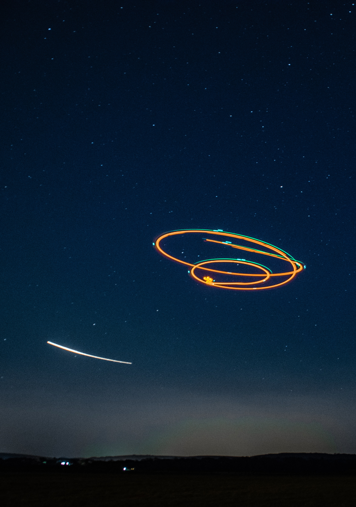

Origins
In the southern half of New Mexico, near a sleep little town call Roswell. The year is 1947. Something crashes in the desert and is recovered by local authorities. Accounts vary, but the incident spawned possibly the most well known paranormal occurrence in modern history. The story from authorities has been mostly about a downed weather balloon. But the common story has always hovered around an extraterrestrial craft crashing. This has now been wrapped into the town’s identity and is a popular attraction in the state. Field Note: When I was a child, I remember watching a show on the history channel in which it explained that the weather balloon was made of a silver material and is the reason that it was at first mistaken for something other worldly. But it is worth noting that the story of an extraterrestrial has persisted over most.

It is possible that nothing may have happened, but the event is so widely known that almost everyone has a theory, and given the strictly secretive nature of the cold war security apparatus, if anything was actually found from there, it is likely that we wouldn’t know the whole story for years to come. It’s worth mentioning that the craze of a UFO in Roswell really took off in the 1970’s. Popular culture has used the story for multiple types of stories. Even in recent years, with the freedom of information act and US leaders releasing formally classified materials, there really hasn’t been as much as one might expect on this topic. Even a couple of US presidents have made remarks in regards or reviewing the materials from that incident.
Some More Information
Post WWII the US had created a couple of agencies to ensure a number of things. The NSA was created to ensure that another Pearl Harbor couldn’t happen. In the late 1940’s the CIA was created for detailed espionage and intelligence to defend against the communist forces. Coincidently the CIA was founded in 1947, the same year as the Roswell crash. This has fueled theories of all sorts, but given the depth of the Cold War, it is entirely plausible that these agencies have nothing to do with any paranormal activity of any kind. Security from this era was often tight, with only really the Watergate scandal in the 1970’s pealing back some of the measures. This would stay somewhat the same into the 9/11 era and the War on Terror with the creation of DHS. There are still some, if not most of the measurements of these eras in place.
Some More Information
-continued-
There is also a cottage industry that has popped up around the idea of aliens crashing. While the idea of aliens crashing being true may have stimulated this sector, it is safe to say that there is a somewhat thriving ecosystem. There are some solid arguments for why the evidence of alien life in this area is mostly a hoax. However, given both the air force base and other military and industrial establishments there is also solid reason for why scientific beings from another world might come to check things out. From an anthropological angle the Roswell incident and aftermath represent some of the most interesting movements in societal evolution. This includes how the story became popularized, and also how many people have formed well thought out opinions on what could have happened. Writer Joe Nickell has even coined a phrase ‘Roswellian Syndrome’ for how a story can be debunked but a theory may persist.
There is also footage of an alien autopsy, pictures and testimonies that was supposed to have leaked. While it all has been both the subject of criticism and glorification, it remains one brick in the wall of the overall story. While there are a number of accounts of people that were involved in one capacity or another there is equal, if not more, criticism. There have also been a wide range of debunking operations surrounding this material.
Some Theories
When it comes to Roswell, it is possible that a downed weather balloon was all that was recovered. Joe Nickell provides a number of reasonable explanations. Also with the slew of documentation being released during COVID about how the government knew what it knew, I found it interesting that nothing Roswell related really seemed to make headlines. There is a possibility that the full truth isn’t know but the reasons why it’s classified could be rather boring. There are sometimes very basic security measures in place, as releasing reports could give insight into how intelligence agencies or the military conduct their work. Field Note: Vice made a good piece about the Roswell incident. It is worth checking out to hear more about Joe Nickell’s position.
What if an alien crash did occur? Well it is likely much of what is stated about the intelligence agencies still applies. To gain the upper hand in technology at a time when atomic weapons were becoming more commonplace. There are even groups that claim to understand the crash and trajectory of a potential flaying saucer. Some people also have claimed to have found various artifacts. This would be understandable as it is commonly said that military facilities are sometimes under alien surveillance. New Mexico is also well known for paranormal activity, which has fed into this mythology. Field Note There are even competing theories among believers as to happened. Depending on the decades the various positions have evolved, but there are even people in the industry not interested in promoting the idea.
There are also a wide range of alternative theories, more than can be quickly listed. A worthy note would be to mention again that New Mexico is well known for various paranormal myths. Of all stories like this that have been covered this is arguably the best known. All sorts of experts have weighed in, and will likely continue to weigh in. Although the most constant theories are based on the existence of aliens, of all the cases in US history there is a strong current of skeptics.